FIA
A Federação Internacional do Automóvel cria e fiscaliza as regras da categoria.

The world of Formula 1
Conheça carros, pilotos, equipes e as pistas mais famosas do automobilismo mundial.
Dados históricos e estruturais; o grid pode mudar a cada temporada.
A Fórmula 1 é o campeonato mundial de automobilismo com carros de rodas expostas e um único lugar. Existe desde 1950 e reúne engenharia de ponta, estratégia e pilotos no limite.
Em cada Grande Prêmio, a semana passa por treinos livres, classificação (que define o grid de largada) e a corrida de domingo.
Conhecer as pistasA Federação Internacional do Automóvel cria e fiscaliza as regras da categoria.
Etapas disputadas em vários países ao longo do ano.
Cada equipe tem dois pilotos e o campeão é quem soma mais pontos.
As equipes também disputam um título próprio.
Os primeiros colocados de cada corrida ganham pontos.
Troca de pneus feita por dezenas de mecânicos em pouco mais de 2 segundos.
Temporada 2026. Confira os dados oficiais antes de apresentar.
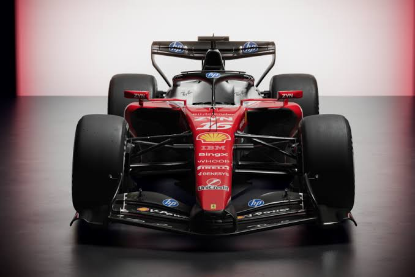
Ferrari · 2026
Charles Leclerc
Lewis Hamilton
O vermelho mais famoso do automobilismo.
Ver detalhes →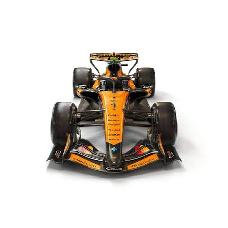
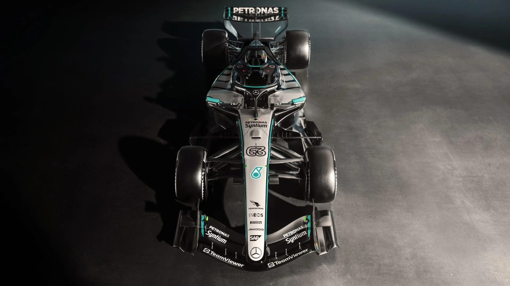
Alguns nomes do grid atual.
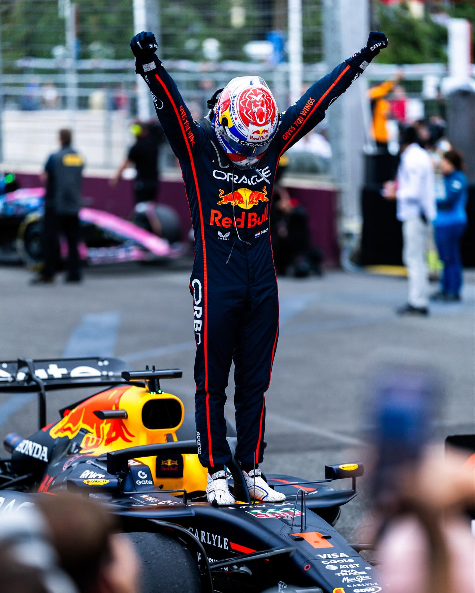
3Red Bull
Holanda
Tetracampeão mundial (2021 a 2024).
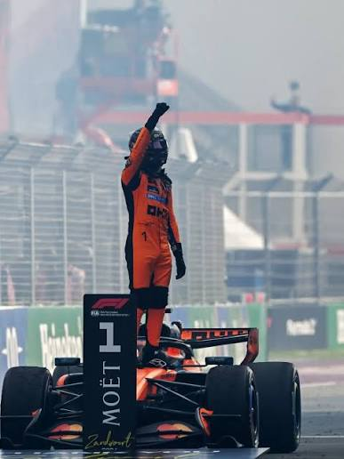
1McLaren
Reino Unido
Campeão mundial de 2025.
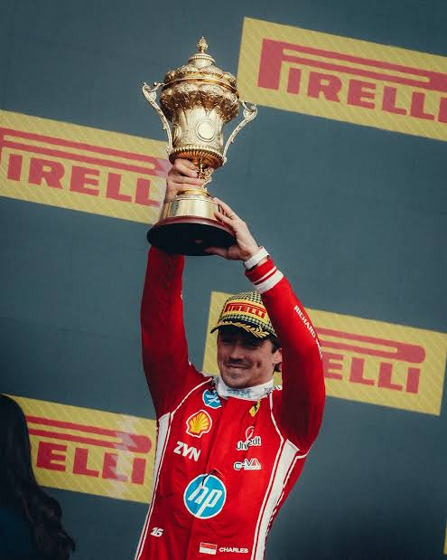
16Ferrari
Mônaco
Na Ferrari desde 2019, rápido em uma volta.
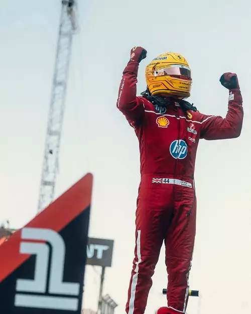
44Ferrari
Reino Unido
Heptacampeão, estreou na Ferrari em 2025.
Para atualizar a temporada, edite pilotos e carro de cada equipe.
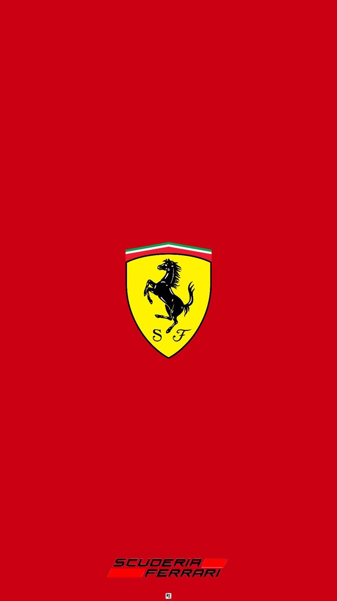
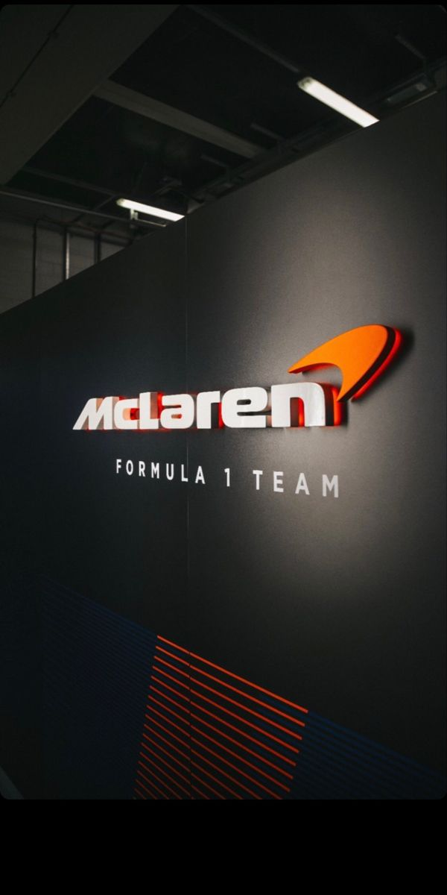
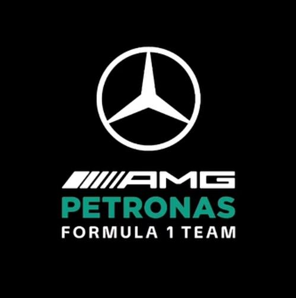
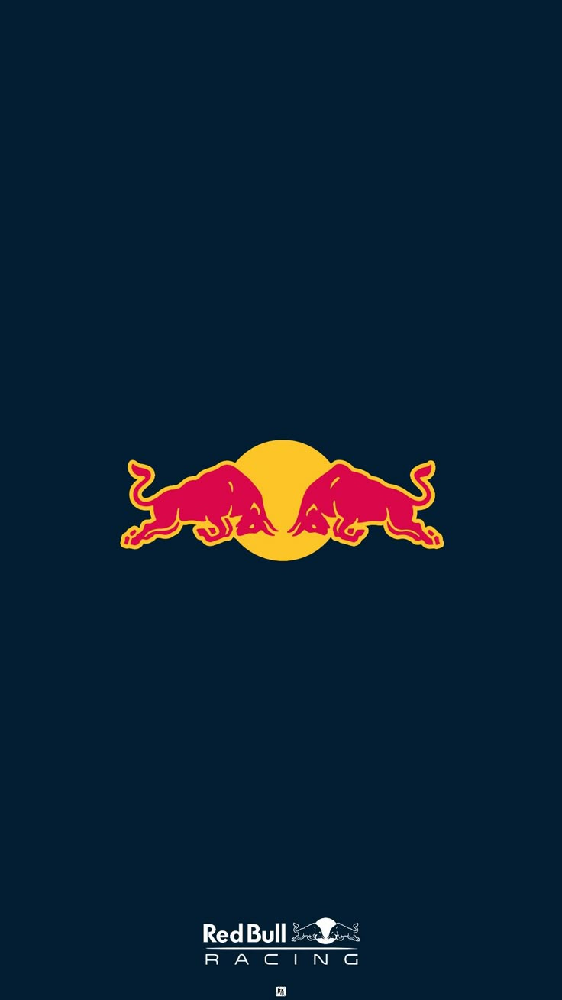
Escolha uma pista para ver a ficha técnica.
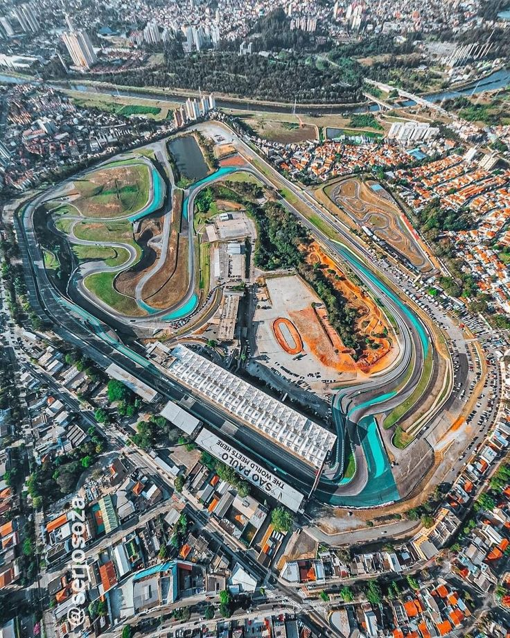
🇧🇷 Brasil · São Paulo
4,309km
15curvas
Traçado técnico e tradicional, com subidas, descidas e sentido anti-horário.
Ver circuito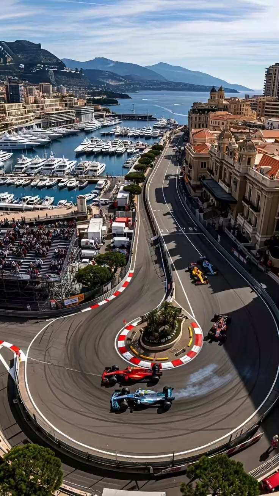
🇲🇨 Mônaco · Monte Carlo
3,337km
19curvas
Pista de rua estreita, onde a classificação vale quase tanto quanto a corrida.
Ver circuito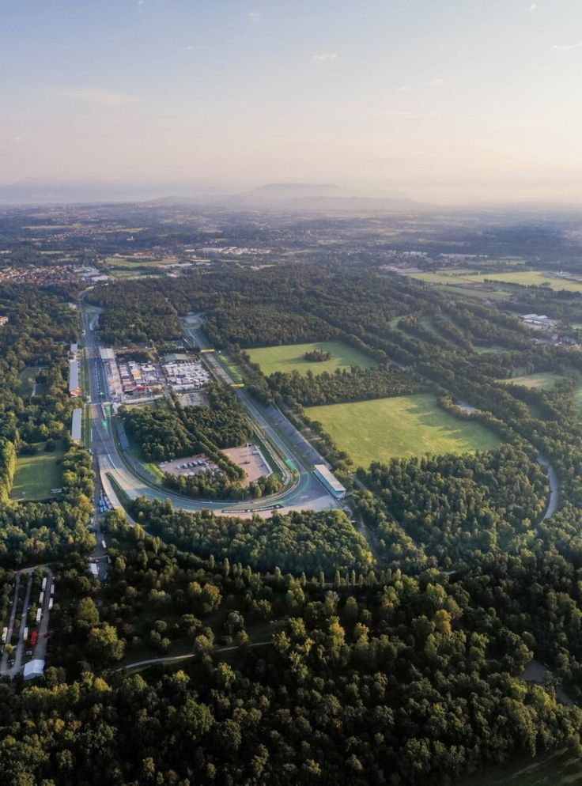
🇮🇹 Itália · Monza
5,793km
11curvas
O "Templo da Velocidade": longas retas e poucas curvas.
Ver circuito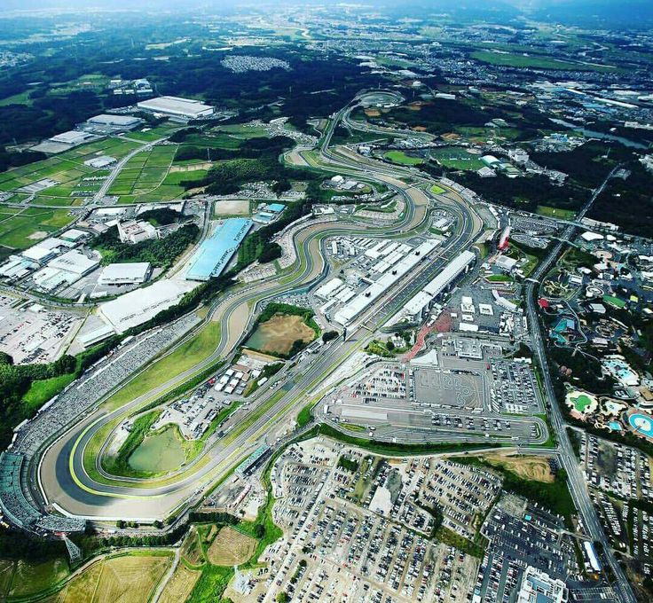
🇯🇵 Japão · Suzuka
5,807km
18curvas
Traçado em formato de 8, um dos favoritos dos pilotos.
Ver circuito🇧🇷 Brasil · São Paulo
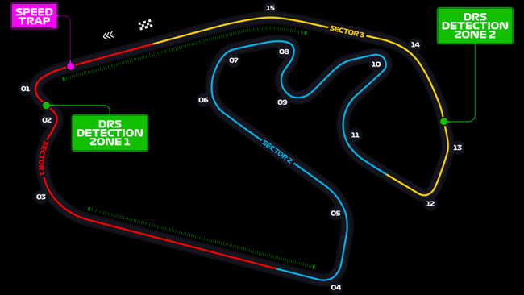
Imagem ilustrativa do traçado, sem escala.
🇲🇨 Mônaco · Monte Carlo
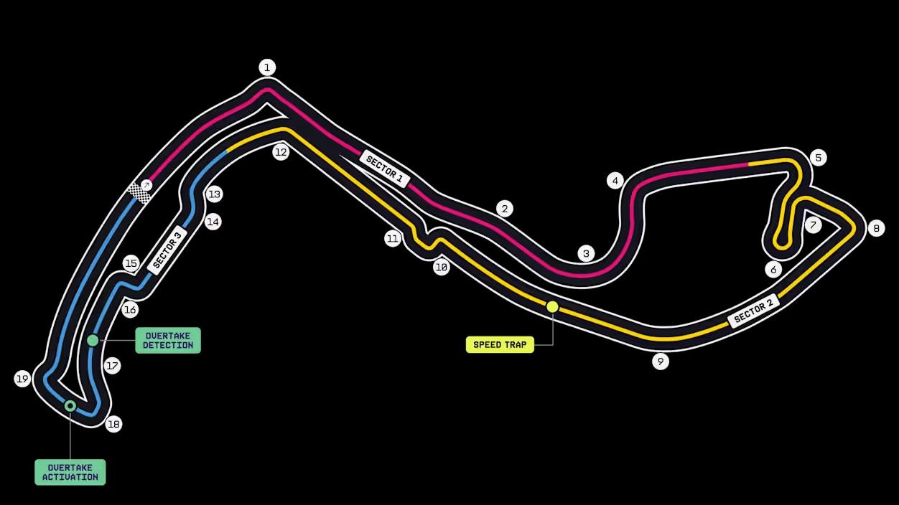
Imagem ilustrativa do traçado, sem escala.
Para cada etapa, copie um <li> e altere os dados. Datas e status abaixo são exemplos.
Austrália
Melbourne
Japão
Suzuka
Itália
Monza
Brasil
São Paulo